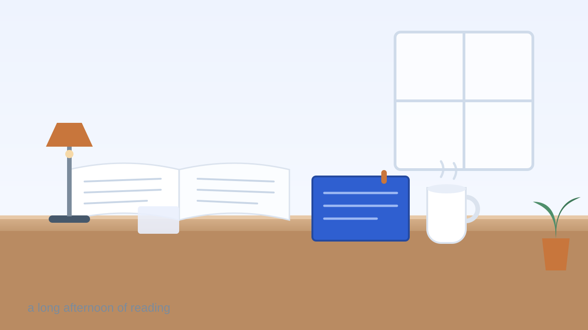

StudyFlow
One place for every assignment, quiz and revision block. StudyFlow keeps all of your academic deadlines in a single, searchable list so that nothing gets remembered twice — or forgotten once.
Study life, three ways
Use the button below to cycle through the images.

About the app
What it is for
Students juggle assignments, studio preparation, quizzes and project deadlines that often land in the same two weeks. Notes on paper and ad-hoc spreadsheets work until the workload increases, and then they quietly stop being updated.
StudyFlow replaces those informal methods with one page that holds every task, its course, its due date and its notes — and shows how close each deadline is.
How it helps me organise study
Every task carries a due date, so the list can be sorted by urgency rather than by when I happened to write it down. Overdue and due-soon items are labelled, which removes the need to do date arithmetic in my head during a busy week.
Because tasks are stored in the browser, the list survives a page reload and is available the next morning without logging into another service.
Key features
Create tasks
Title, course code and name, due date, description and free-text notes.
Update in place
The same form loads an existing task, so details can be edited without retyping.
Delete safely
A confirmation dialog stands between a mis-click and a lost deadline.
One organised view
All tasks in a table, sortable by due date, filterable by status.
Validated input
Empty required fields and impossible dates are rejected with a clear message.
Live date and time
The current date and time sit at the bottom of the task page, always current.
About me
Jinghui Yang
I am a first-year student at the University of Adelaide, taking INFO 1012 — Information Technology Systems this semester. Most of what I know about the web I learned by breaking things and then reading the console until it stopped complaining.
What interests me is how a system is actually put together: why a login is safe or not, where the data really lives, and what happens when a request fails halfway through. I like small tools that remove a daily friction — StudyFlow came out of losing track of three due dates in the same week.
How I manage my study tasks
- One list, one place. Every assessment goes into StudyFlow the day it is announced, including the ones that are weeks away.
- Time-boxed blocks. I block 90-minute sessions in a paper weekly planner and assign each block to a task from this list.
- Two-week horizon. Each Monday I sort by due date and only work from the first two weeks; anything further out is left alone.
- Notes in the task. Studio preparation steps and reading lists live in the task's notes field, so the detail is never in a separate document.